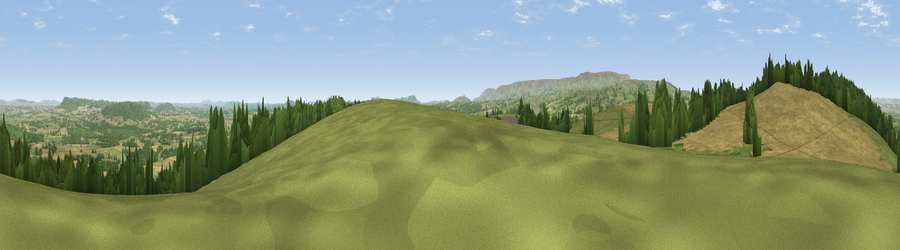

Viewpoint near Blakemere
#3861 in England · top 14% of its area beats it · near BlakemereThe view, rendered

A 360° render of this exact spot computed from the terrain model, tree cover and land cover — summer colours, afternoon light, calibrated against photographs of famous viewpoints. Real trees, hedges and buildings will differ in detail.
The panorama
Grey silhouette: terrain skyline in each direction (720 bearings, Earth curvature and refraction included). Dashed green: skyline with trees (+15 m) and buildings (+8 m) as obstacles. Blue strip: how far the ground is visible on each bearing.
Where the view opens
Wedge length = distance to the farthest visible ground on that bearing (vegetation-aware). Rings at 10, 25 and 50 km.
What fills the view
42% cropland · 38% grassland · 19% woodland ·
Angular shares of the visible panorama (visual magnitude), not map area. Landscape diversity 0.47 (0–1 Shannon).
Key numbers
More beautiful places nearby
The staircase of upgrades: each row has a higher view potential than everything closer. Driving times are estimates from straight-line distance, calibrated against real road routing — check an actual route before setting out.
| Place | Direction | Drive | Score |
|---|---|---|---|
| Viewpoint near Blakemere | SE · 1 km | ~4 min | 75.5 |
| Viewpoint near Moccas | NW · 2 km | ~4 min | 75.9 |
| Bredwardine Hil | NW · 5 km | ~12 min | 77.1 |
| Viewpoint near Middlewood | NW · 6 km | ~14 min | 79.4 |
| Merbach Hill | NW · 7 km | ~14 min | 81.1 |
| Viewpoint near Craswall | WSW · 11 km | ~21 min | 81.5 |
| Garway Hill | SSE · 17 km | ~30 min | 84.6 |
| Herefordshire Beacon | E · 41 km | ~60 min | 85.8 |
52.05773, -2.94543 · source: screening · position refined by local search. Computed location — check access rights before visiting.